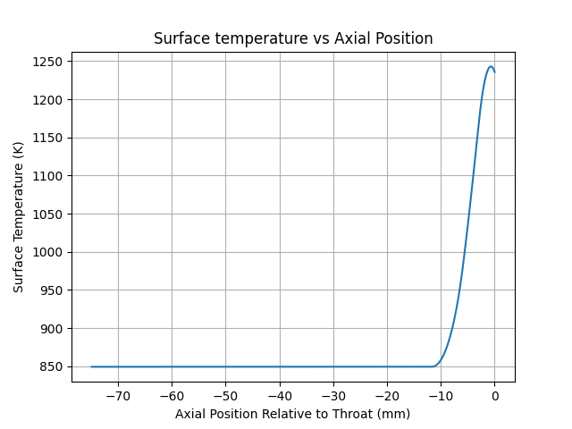
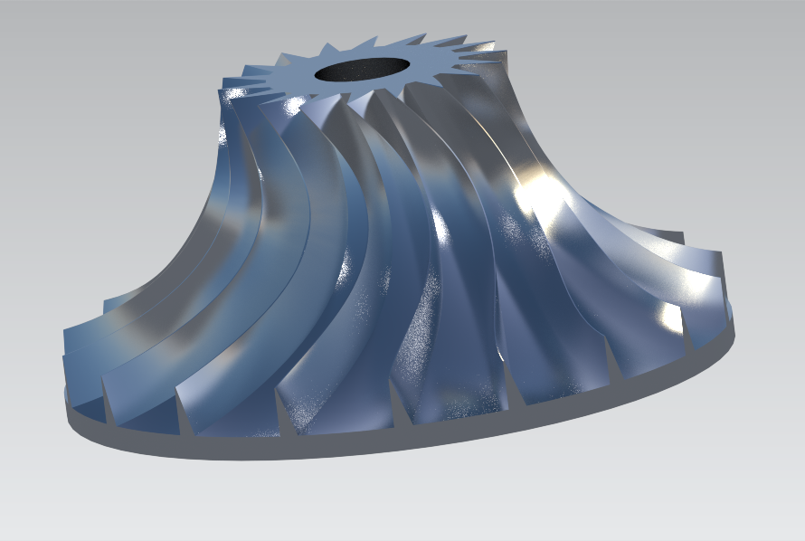
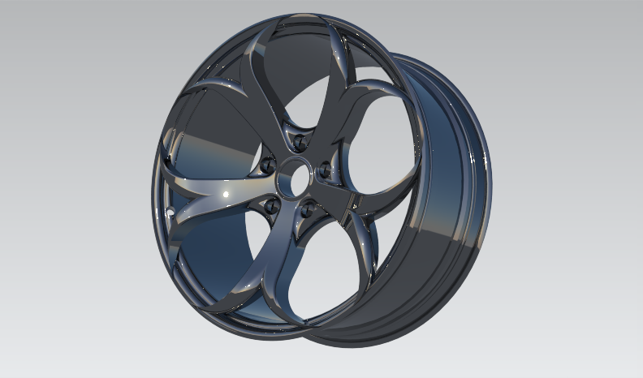
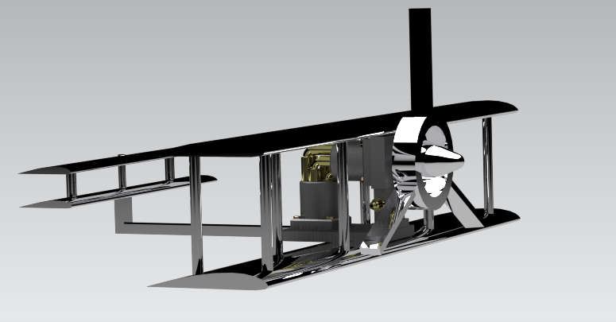
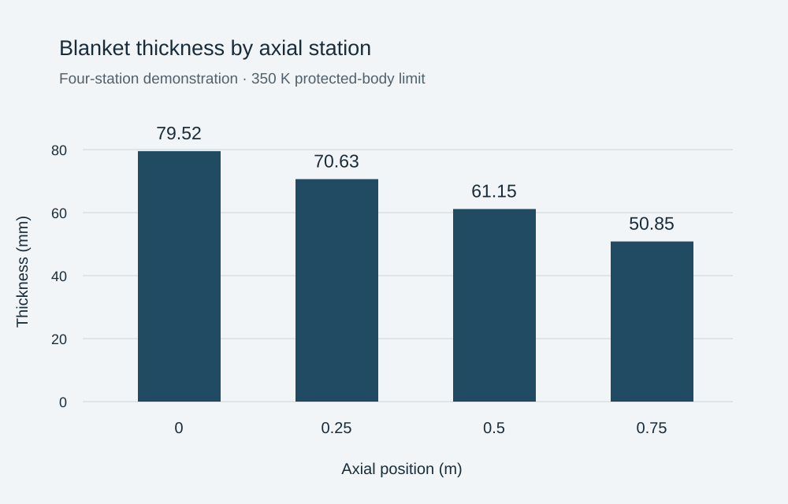

01PROPULSION / HEAT TRANSFER
Igniter thermal analysis
From nozzle contour to local Mach number, heat transfer, and wall temperature.
Explore projectENGINEERING PORTFOLIO / SELECTED WORK
I'm Jonathan Cats. My work spans propulsion, aerothermal analysis, thermal protection, and mechanical CAD.
Explore the projects
THE PROJECTS
Models, mechanisms, and the
thinking behind them.

01PROPULSION / HEAT TRANSFER
From nozzle contour to local Mach number, heat transfer, and wall temperature.
Explore project
02MECHANICAL DESIGN / CAD
A sculpted five-spoke rim developed through solid modeling, sections, and rendering.
Explore projectTURBOMACHINERY / CAD
Three blade configurations exploring the geometry of a centrifugal impeller.
Explore project
04MECHANISMS / ASSEMBLY DESIGN
An air-engine mechanism integrated into a flyer-inspired mechanical assembly.
Explore project 05
05AEROTHERMODYNAMICS / PYTHON
Vehicle surface temperatures, trajectory aerodynamics, and local stagnation-point heating.
Explore project
06THERMAL PROTECTION / ENGINEERING SOFTWARE
Turning heating histories into preliminary insulation thickness and mass estimates.
Explore project